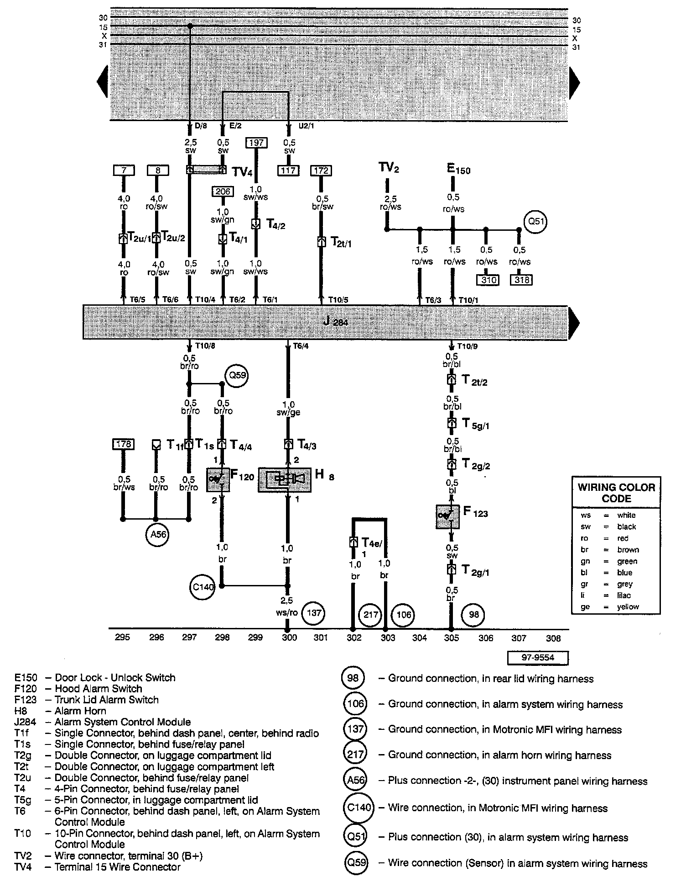

Diagram 61/22 (Track 295-308)
IMPORTANT NOTE:
This manufacturer uses "Track" style wiring diagrams.
For information on how to use these diagrams effectively, please refer to Diagram Information and Instructions. Diagram Information and Instructions
Master Diagram Index: To locate diagrams by component name, please refer to the Master Diagram Index at the vehicle level. Master Diagram Index
Track 295 - 308:

Track Continuations
Previous Diagram Diagram 61/21 (Track 281-294)
Next Diagram Diagram 61/23 (Track 309-322)
To Refer to
7 Track 1-14 [61/1] Diagram 61/01 (Track 1-14)
8 Track 1-14 [61/1] Diagram 61/01 (Track 1-14)
117 Track 113-126 [61/9] Diagram 61/09 (Track 113-126)
172 Track 169-182 [61/13] Diagram 61/13 (Track 169-182)
178 Track 169-182 [61/13] Diagram 61/13 (Track 169-182)
197 Track 197-210 [61/15] Diagram 61/15 (Track 197-210)
206 Track 197-210 [61/15] Diagram 61/15 (Track 197-210)
310 Track 309-322 [61/23] Diagram 61/23 (Track 309-322)
318 Track 309-322 [61/23] Diagram 61/23 (Track 309-322)